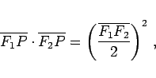
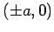
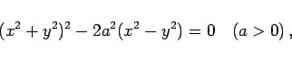
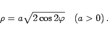
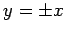
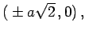
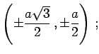
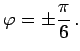
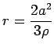
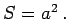

Lemniskate nennt man den Spezialfall a =c der CASSINIschen Kurven, die der Bedingung genügen
|  | (2.229) |
wobei die Fixpunkte F1, F2 bei  liegen. Die Gleichung lautet in kartesischen und in Polarkoordinaten
|  | (2.230a) |
|  | (2.230b) |
Der Koordinatenursprung ist Doppelpunkt und Wendepunkt zugleich, wobei die Tangenten  sind.
Die Schnittpunkte A und C mit der x-Achse liegen bei  die Maxima und Minima E, G, K, I bei  der Polarwinkel beträgt in diesen Punkten 
Der Krümmungsradius ergibt sich zu  und der Flächeninhalt jeder Schleife zu 